Thematische Abfragen
Eine thematische Abfrage führt zu einer den Bedingungen entsprechenden Auswahl aus den abgefragten Attributwerten. Thematische Abfragen sind daher konventionelle (=ohne Raumbezug) Abfragen relationaler Datenbestände. In GIS werden die thematischen Abfragen entweder mit SQL (Structured Query Language) oder systeminternen Abfragesprachen durchgeführt. In beiden Fällen werden die einzelnen Befehle üblicherweise mit Hilfe eines graphischen Dialogsystems ausgewählt und zusammengesetzt.
Input-Daten zu den Operatoren-Beispielen
Die nachfolgenden Beispiele basieren auf den folgenden Input Daten (Geometrie und Relation). Für die logischen Operatoren sind die Venn-Diagramme wie zuvor zu interpretieren.
|
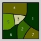 |
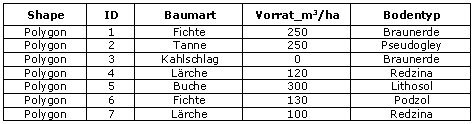 |
Beispiele zu den unterschiedlichen Abfragen
Machen Sie sich mit der Wirkungsweise der Operatoren vertraut. Nachfolgend finden Sie eine Reihe von SQL Abfragen. Die resultierenden Ergebnisse sind sowohl als Relation als auch als Geometrie dargestellt.
Vergleichende Operatoren
| SQL-Anweisung | Ergebnis Relation | Ergebnis Geometrie |
|---|---|---|
SELECT * FROM Parzelle WHERE Baumart =
'Fichte'; |
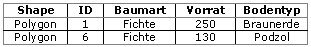 |
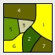 |
SELECT Baumart, Vorrat, Bodentyp FROM Parzelle
WHERE Bodentyp = 'Redzina'; |
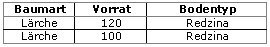 |
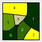 |
SELECT * FROM Parzelle WHERE Vorrat
>120; |
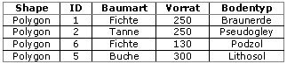 |
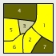 |
SELECT *FROM ParzelleWHERE Vorrat >= (SELECT AVG (Vorrat) FROM
Parzelle); |
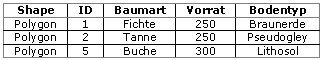 |
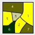 |
Logische Operatoren
Die logische Verknüpfung AND
| OPERATOR | ABFRAGE | SQL |
|---|---|---|
| AND | Suche alle Parzellen, die mit Lärchen bewaldet sind und einen Vorrat größer als 110m3/ha aufweisen. | select ParzelleID, Baumart, Vorrat from Parzelle where Baumart = „Lärche“ and Vorrat > 110 |
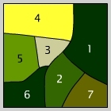 |
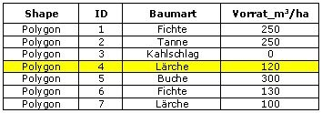 |
Die logische Verknüpfung OR
| OPERATOR | ABFRAGE | SQL |
|---|---|---|
| OR | Suche alle Parzellen, die mit Lärchen bewaldet sind oder einen Vorrat größer als 110m3/ha aufweisen. | select ParzelleID, Baumart, Vorrat from Parzelle where Baumart = „Lärche“ or Vorrat > 110 |
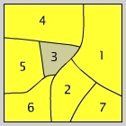 |
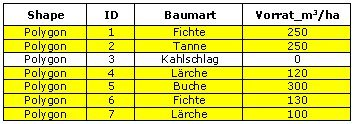 |
Die logische Verknüpfung XOR
| OPERATOR | ABFRAGE | SQL |
|---|---|---|
| XOR | Suche alle Parzellen, die mit Lärchen bewaldet sind oder einen Vorrat größer als 110m3/ha aufweisen, die aber nicht beide Bedingungen gleichzeitig erfüllen. | select ParzelleID, Baumart, Vorrat from Parzelle where Baumart = „Lärche“ xor Vorrat > 110 |
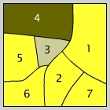 |
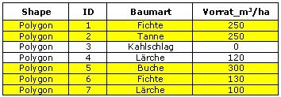 |
Die logische Verknüpfung NOT
| OPERATOR | ABFRAGE | SQL |
|---|---|---|
| NOT | Suche alle Parzellen, die mit Lärchen bewaldet sind, aber deren Vorrat nicht größer als 110m3/ha ist. | select ParzelleID, Baumart, Vorrat from Parzelle where Baumart = „Lärche“ AND NOT Vorrat > 110 |
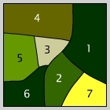 |
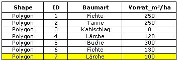 |
Verschachtelte logische Operatoren
Für die nachfolgend gezeigten verschachtelten logischen Operatoren gelten folgende Angaben:
(GITTA 2005)Kreis 1: Baumart = „Lärche“
Kreis 2: Vorrat > 110 m3/ha
Kreis 3: Dichte > 80%
| Venn-Diagramm | Bedingungen | Entsprechende SQL-Abfrage |
|---|---|---|
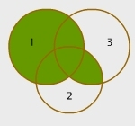 |
(3 AND 2) OR 1 | Select * from Parzelle where (Dichte > 80% and Vorrat > 110 m3/ha) or Baumart = „Lärche“ |
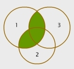 |
1 AND (3 OR 2) | Select * from Parzelle where Baumart = „Lärche“ and (Dichte > 80% or Vorrat > 110 m3/ha) |
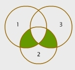 |
(3 XOR 1) AND 2 | Select * from Parzelle where (Dichte > 80% xor Baumart = „Lärche“) and Vorrat > 110 3/ha |
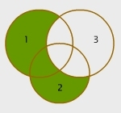 |
(2 OR 1) AND NOT 3 | Select * from Parzelle where (Vorrat > 110 m3/ha or Baumart = „Lärche“) AND NOT Dichte > 80% |
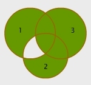 |
3 OR (2 XOR 1) | Select * from Parzelle where Dichte > 80% or (Vorrat > 110 m3/ha xor Baumart = „Lärche“) |
Bearbeiten Sie...
Betrachten Sie die folgende SQL Abfrage: Select * from Parzelle where (Dichte > 80% and Vorrat >
AVER(Parzelle.Vorrat)) or Baumart = „Lärche“
- Wie viele Operatoren-Typen können Sie identifizieren
- Formulieren Sie die Anfrage in einen normalen Fragetext um
- Können Sie die Anfrage mit gleichem Resultat auch anders formulieren?